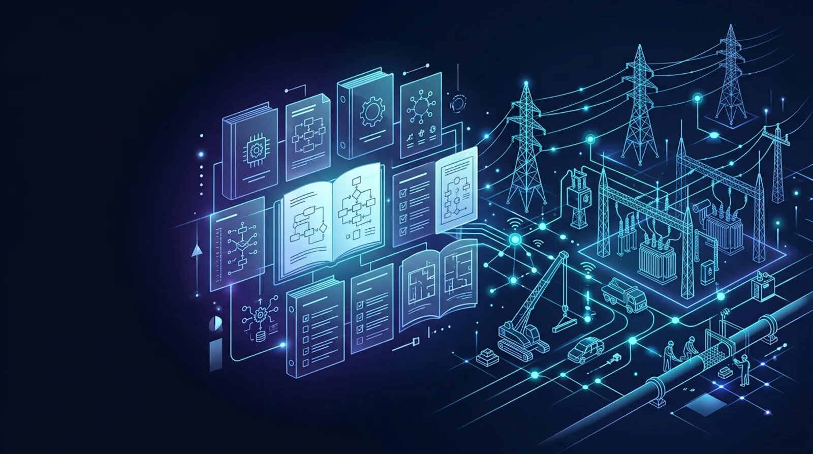

Technical resources for project managers, supervisors, safety teams, engineers, IT administrators, and field crews deploying AI and IoT identification and location solutions across utility construction operations.

Utility construction projects generate large volumes of operational information throughout planning, mobilization, construction, commissioning, and project closeout. Engineering teams, utility contractors, project managers, inspectors, and field supervisors require accurate documentation to deploy AI and IoT solutions consistently across multiple construction sites while maintaining workforce accountability, equipment identification, inventory visibility, installation traceability, and regulatory compliance.
The UtilCon AI Knowledge Center provides technical documentation supporting AI and IoT deployments throughout utility construction operations. Rather than focusing only on product specifications, these resources explain recommended implementation practices, deployment workflows, software configuration guidance, operational procedures, and project documentation for overhead transmission construction, underground pipeline installation, electrical substations, utility relocation, and horizontal directional drilling projects.
Artificial Intelligence of Things, commonly called AIoT or AI and IoT, combines artificial intelligence with connected industrial devices and enterprise software. Within utility construction, AI and IoT helps organize identification records collected from RFID, BLE, GPS, and related connected technologies to improve workforce management, access control, asset tracking, inventory administration, work package verification, and installation traceability.
The Knowledge Center emphasizes practical deployment guidance rather than promotional information, helping organizations establish repeatable implementation procedures across distributed construction programs.
The documentation available through UtilCon AI supports organizations involved in numerous utility construction activities, including:
Each resource has been developed to reflect real operational requirements encountered throughout utility construction rather than generic AI and IoT implementation examples.
Successful deployment begins with accurate technical documentation that enables engineering teams, IT administrators, construction managers, and field supervisors to configure AI and IoT systems consistently across multiple job sites.
The UtilCon AI documentation library provides structured implementation guidance covering both software configuration and field deployment activities while supporting enterprise governance throughout utility construction programs.
Documentation categories include:
These resources simplify implementation planning while promoting consistent deployment practices across geographically distributed construction operations.
Field devices must be configured consistently before deployment to active construction environments. Standardized setup procedures reduce implementation time while helping organizations maintain reliable identification records across multiple projects.
Documentation covers configuration activities for:
Recommended deployment procedures include verification of identification assignments, communication settings, user permissions, software registration, synchronization schedules, and operational validation before equipment enters production environments.
Software configuration documentation explains how AI and IoT applications interact with enterprise business systems supporting utility construction operations.
Configuration guidance includes:
Configuration recommendations prioritize operational consistency while supporting organizations managing multiple simultaneous construction projects.
Every utility construction project presents unique operational challenges depending on geography, workforce size, utility type, communication availability, project duration, and regulatory requirements.
Deployment planning documentation assists organizations with:
These structured planning resources reduce implementation risks while improving deployment consistency across utility construction programs.
Large utility construction programs regularly involve new contractors, subcontractors, engineering consultants, inspectors, equipment operators, and temporary field personnel. Consistent onboarding procedures improve operational readiness while supporting standardized workforce identification and access management across active construction projects.
UtilCon AI provides onboarding documentation supporting:
Onboarding resources explain recommended operational workflows, user responsibilities, identification procedures, software access, construction documentation standards, and equipment handling practices before personnel begin field activities.
The objective is to establish consistent operational procedures that improve workforce coordination while reducing administrative effort throughout utility construction programs.
Major utility construction projects often involve several independent crews working simultaneously across multiple rights-of-way, easements, substations, staging yards, and pipeline corridors.
Operational guidance supports:
Standardized documentation helps maintain consistent identification and operational practices regardless of project size or geographic distribution.
Well-structured technical guidance helps engineering teams, IT administrators, construction supervisors, safety managers, and field personnel deploy AI and IoT solutions consistently across utility construction environments. The following questions address common implementation topics encountered during planning, deployment, and day-to-day operations.
Utility construction projects operate within established engineering, safety, environmental, contractual, and utility owner requirements. Accurate documentation supports project quality, workforce accountability, construction verification, and regulatory reporting throughout every construction phase.
The UtilCon AI Knowledge Center provides guidance supporting compliance activities associated with AI and IoT deployments used in utility construction environments.
Compliance resources assist organizations with:
These resources help engineering teams maintain organized documentation while supporting internal quality management procedures.
Utility construction often requires multiple permits and approvals before work begins. Documentation must remain consistent throughout planning, excavation, installation, restoration, inspection, and commissioning activities.
Reference materials support documentation associated with:
Proper documentation simplifies project administration while improving communication among contractors, inspectors, and utility owners.
Safety documentation remains an essential component of every utility construction project.
Guidance includes procedures supporting:
Reliable identification records strengthen operational transparency while supporting established construction safety procedures.
Experience gained through numerous industrial IoT implementations has demonstrated that successful deployments depend on standardized planning, structured documentation, consistent workforce training, and repeatable operational procedures.
UtilCon AI recommends several implementation practices for utility construction organizations.
Best practices include:
These operational practices improve long-term project consistency while reducing administrative complexity.
Major utility organizations often manage numerous active construction projects simultaneously across different cities, states, provinces, and service territories.
Standardized documentation enables organizations to maintain consistent operating procedures across:
Consistent documentation improves operational visibility while simplifying engineering reviews and project governance.
The UtilCon AI Knowledge Center includes deployment case studies illustrating how AI and IoT identification and location solutions can be implemented across a variety of utility construction environments. These examples focus on deployment methodology, operational workflows, implementation considerations, and lessons learned rather than customer-specific information.
Representative deployment scenarios include:
Each case study examines planning, workforce onboarding, equipment identification, software configuration, project deployment, and operational outcomes while protecting confidential project information.
Organizations can use these references to better understand deployment planning, project governance, and implementation strategies for AI and IoT identification and location systems.
Experience gained through numerous industrial IoT implementations demonstrates that successful utility construction deployments typically share several common characteristics.
Key implementation observations include:
These practices help organizations establish repeatable implementation processes across multiple utility construction programs.
Utility construction environments often operate under demanding schedules with geographically distributed workforces and rapidly changing project conditions. Reliable technical assistance helps organizations maintain operational continuity throughout planning, deployment, commissioning, and ongoing project execution.
UtilCon AI provides technical support resources covering both software and deployment activities.
Support topics include:
Support resources are designed to assist engineering teams, project managers, IT departments, construction supervisors, and field personnel throughout the entire deployment lifecycle.
Utility construction standards, project requirements, and enterprise software environments continue to evolve throughout the lifecycle of major infrastructure programs.
The Knowledge Center is maintained with updated technical references covering:
Maintaining current documentation helps organizations establish consistent operational procedures across both new and existing construction projects.
Engineering organizations frequently require guidance that extends beyond initial software installation.
Technical resources support activities including:
These resources help organizations scale AI and IoT deployments across expanding utility construction programs.
UtilCon AI was created within Aperture Venture Studio, with support from GAO, building upon more than two decades of practical industrial IoT experience. This experience has been developed through thousands of successful IoT deployments serving utility organizations, industrial enterprises, research institutions, government agencies, and infrastructure operators throughout North America.
Our engineering teams continue to invest in research, software development, quality assurance, and enterprise support services that help organizations deploy RFID, BLE, GPS, LoRaWAN, edge computing, and AI and IoT technologies across demanding utility construction environments.
Development activities are guided by experienced engineers and Ph.D. professionals from leading universities, supported by strategic technology partners and extensive industrial implementation knowledge. Remote and onsite technical assistance enables organizations to deploy AI and IoT identification and location solutions while maintaining consistent operational practices across distributed construction projects.
The UtilCon AI Knowledge Center serves as an ongoing technical reference for organizations deploying AI and IoT solutions throughout utility construction operations.
Available resources include:
Whether your organization is expanding transmission infrastructure, constructing underground pipelines, building substations, or completing municipal utility projects, these resources provide practical guidance supporting consistent AI and IoT deployment across every construction phase.
Every utility construction project presents unique operational requirements based on workforce size, project duration, communication availability, infrastructure type, enterprise software, regulatory obligations, and geographic conditions.
UtilCon AI works with utility contractors, engineering firms, construction organizations, public utilities, and infrastructure developers to recommend AI and IoT solutions supporting workforce identification, secure access management, asset accountability, inventory administration, work package verification, installation traceability, and enterprise reporting.
Contact UtilCon AI →